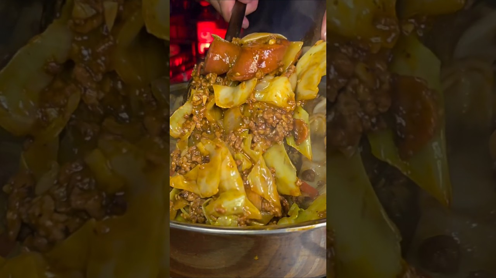

| Course | Main Dish |
| Categories | Beef, Pork, Vegetable |
| Collections | BigYellowGuyCooks |
| Source | BigYellowGuyCooks – YouTube |
| Notes | see “Notes” below |

2 lb ground beef (80/20)
1 package smoked sausage
1/2 package bacon (about 1/2 lb)
1 large head green cabbage (2–3 lb), cut into chunks
1 large white onion, chunky
1 red bell pepper, chunky
1 yellow bell pepper, chunky
4 tbsp all-purpose flour
3 tbsp tomato paste
3 tbsp garlic, minced
1 jalapeño, minced
2 1/2 cups beef broth
2 tbsp Worcestershire sauce
2 1/2 tbsp salt-free Tony's (or any salt-free Creole seasoning)
1 tbsp smoked paprika
2 tsp salt (more if desired)
1 pack Kraft Cheesy Melt Triple Cheddar
Optional: 1 tsp black pepper
Optional: red pepper flakes, to taste
1 package Krusteaz Honey Cornbread mix
4 tbsp real butter (stick)
1 tbsp garlic, minced
1 tsp dried parsley
2 tbsp Mike's Hot Honey
1 tsp crushed red pepper flakes
Mashed potatoes (no recipe given in the video)
Chop and crisp the bacon and smoked sausage in a large pot or Dutch oven. Remove them from the pot. Brown the ground beef over medium-high heat. Do NOT drain the fat.
Push the beef to the sides. Add the tomato paste and cook 2 minutes, then add the onions and peppers and cook 2–3 minutes more.
Add the flour and mix thoroughly. Add the salt-free Tony's, paprika, salt, beef broth, and Worcestershire. Then add the garlic and jalapeño and simmer 5 minutes.
Taste and adjust the seasoning.
Add the chopped cabbage in batches (as your pot allows), stirring until coated in the gravy. Cover and reduce the heat.
Simmer, covered, 10–15 minutes, until the cabbage is the texture you like.
Stir the bacon and smoked sausage back in, then serve. (Adding them at the end keeps their texture; the rendered fat already flavored the pot. You can add them earlier if you prefer.)
Cornbread glaze: Bake the cornbread per the package. In a small pan over medium heat, cook the butter and garlic until fragrant. Add the hot honey, parsley, and pepper flakes; stir until slightly thickened. Spread over the cornbread and let set 5 minutes, then cut.
If the cabbage sauce is too runny, cook it uncovered a few more minutes. To serve: mashed potatoes down first, a handful of the Kraft cheese on top, then the cabbage spooned over, with a slice of cornbread on the side.
Gap in this export: Package sizes for the smoked sausage, bacon, Kraft cheese, and Krusteaz cornbread mix
Gap in this export: Mashed potato recipe / amount (used only as a serving base)
Gap in this export: Number of servings; prep and cook times